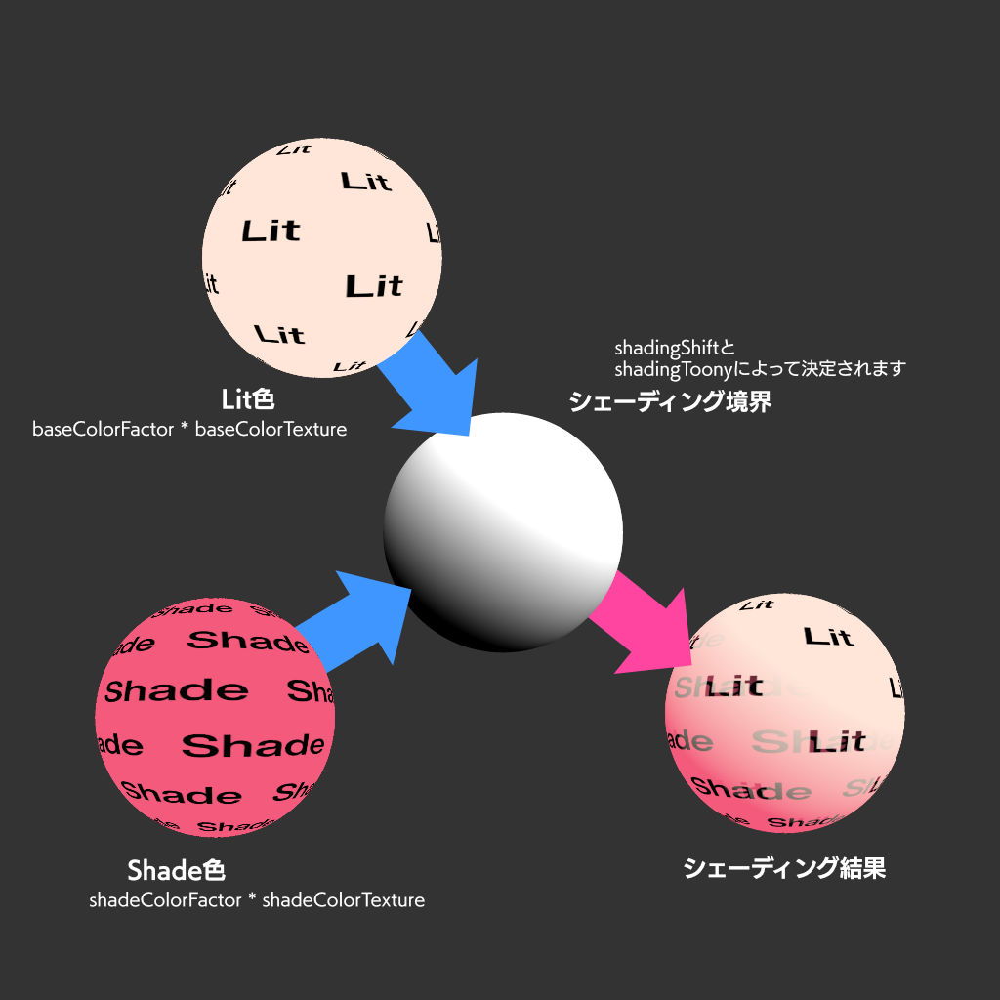
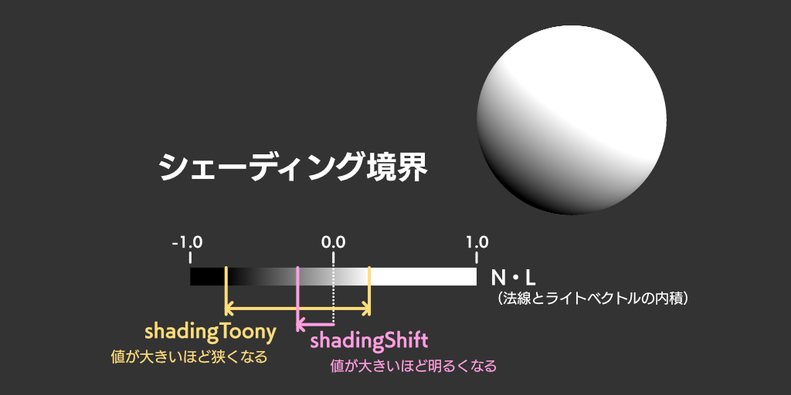

VRMC_materials_mtoon
Version 1.0
Table of Contents generated with DocToc
- Contributors
- Dependencies
- Overview
- Extending Materials
- Definition
- Types
- Vertex Colors
- Coordinates
- BRDF
- Meta
- Rendering
- Lighting
- shadingShiftTextureInfo
- Global Illumination
- Emission
- Rim Lighting
- Outline
- UV Animation
- Extension compatibility and fallback materials
Contributors
- Sumi Masataka
- Obuchi Yutaka
Status
Complete
Dependencies
Written against the glTF 2.0 spec.
Interaction with KHR_materials_unlit
If the material has both VRMC_materials_mtoon and KHR_materials_unlit, VRMC_materials_mtoon takes precedence.
If it is difficult to implement MToon shader, it MAY fallback to KHR_materials_unlit.
Overview
This extension defines a material with toon shading for VRM models.
The objective is to coordinate with scenes with PBR shading while adding toon effects. It does not specialize in Japanese hand-drawn animation-like expressions.
Toon shading, in general, usually takes the image-processing approach, while this specification approximates toon-like looking, avoiding image-processing. Therefore, this definition includes definitions that depend on specific rendering techniques.
Extending Materials
MToon materials are defined by adding the VRMC_materials_mtoon extension to material definitions.
{
"materials": [
{
"name": "MyUnlitMaterial",
"pbrMetallicRoughness": {
"baseColorFactor": [ 0.5, 0.8, 0.0, 1.0 ]
// texture
},
// emission
"extensions": {
"VRMC_materials_mtoon": {
"specVersion": "1.0",
// ...
}
}
}
]
}
Definition
Types
Colors and textures are stored in linear colorspace as glTF core specification specifies unless it's explicitly specified.
Vertex Colors
In MToon, vertex colors are ignored.
Meta
This section specifies about meta information of the extension.
MToon Defined Properties
| Type | Description | Required | |
|---|---|---|---|
| specVersion | string |
Version of the extension | ✅ Yes |
specVersion ✅
Indicates the version number of the extension.
The value is "1.0".
- Type:
string - Required: Yes
Rendering
This section specifies the rendering of MToon materials.
Render Mode
Render Mode specifies how this material will be rendered with alpha processing.
The alpha value refers to the alpha value defined by pbrMetallicRoughness.baseColorFactor and pbrMetallicRoughness.baseColorTexture defined in the glTF core specification.
alphaMode and alphaCutoff defined in the glTF core specification define how to deal with the alpha value.
The details of each alpha mode conform to the glTF specification.
In addition to the alphaMode defined in the glTF, this extension defines the property transparentWithZWrite.
It is usually not recommended to write to the depth buffer when alphaMode is BLEND.
When transparentWithZWrite is set to true, it is recommended to write to the depth buffer even when alphaMode is BLEND.
The implementation may fallback to ordinary alpha blending if it is difficult to implement the
transparentWithZWriteor equivalent behavior.
Render Queue
Render Queue specifies in what order MToon materials should be drawn. MToon expects the following order of rendering:
alphaModeisOPAQUEalphaModeisMASKalphaModeisBLENDandtransparentWithZWriteistruealphaModeisBLENDandtransparentWithZWriteisfalse
Since transparency is often used in toon shaders, problems due to the rendering order often happen.
MToon introduces not only transparentWithZWrite but also another property renderQueueOffsetNumber for this reason.
renderQueueOffsetNumber specifies the offset value to each rendering order.
It is intended to be an offset value of the Render Queue value in Unity.
renderQueueOffsetNumber only works when alphaMode is BLEND.
The higher the value, the later the drawing order.
The following table shows the possible ranges of values.
| Min Value | Max Value | |
|---|---|---|
alphaMode is OPAQUE |
0 |
0 |
alphaMode is MASK |
0 |
0 |
alphaMode is BLEND and transparentWithZWrite is true |
0 |
+9 |
alphaMode is BLEND and transparentWithZWrite is false |
-9 |
0 |
The order specified by alphaMode is prioritized regardless of renderQueueOffsetNumbers.
When rendering non-MToon models such as other glTF models together, assume that their renderQueueOffsetNumber is 0.
The implementation may assume renderQueueOffsetNumber as 0 as a fallback if it is difficult to implement the renderQueueOffsetNumber or equivalent behavior.
MToon Defined Properties
| Type | Description | Required | |
|---|---|---|---|
transparentWithZWrite |
boolean |
Whether write to depth buffer or not when alphaMode is BLEND |
No, default: false |
renderQueueOffsetNumber |
integer |
Offset value to the rendering order | No, default: 0 |
transparentWithZWrite
The value specifies whether write to depth buffer or not when alphaMode is BLEND.
- Type:
boolean - Required: No, default:
false
renderQueueOffsetNumber
An offset value to the rendering order.
- Type:
integer - Required: No, default:
0
Double Sided
Mesh culling follows the specification of the doubleSided property of the glTF core specification.
However, front-face culling is always used for drawing outlines which is defined in this extension (See Outline) regardless of the doubleSided value.
Lighting
This section specifies the lighting of MToon materials.
Lighting Model
MToon extends the Lambert reflection model. While surface normals and light vectors are used for shading as the normal Lambert reflection model does, MToon has the following features to enable toon expression:
- Apart from the base color, a shade color can be specified.
- The shade boundary's position and width (feather) can be adjusted.
Lit Color
Base color is determined by pbrMetallicRoughness.baseColorFactor and pbrMetallicRoughness.baseColorTexture which are defined in the glTF core specification.
Shade Color
MToon specifies a shade color in addition to the base color.
While the typical Lambert reflection model renders unlit surfaces in black,
MToon interpolates between the base and shade colors depending on how lit the surface is.
Also, just like how the baseColorTexture interacts with the baseColorFactor, a different texture can be specified for the shade color, and the texture color multiplies the shade color factor.
The shade color uses two properties, shadeColorFactor and shadeMultiplyTexture, defined by the MToon extension.

Surface Normal
MToon can use normal textures.
MToon uses normalTexture defined in the glTF core specification.
Shading Shift
MToon linearly interpolates base and shade colors according to the dot product of the surface normal and the light vector. MToon can adjust the threshold position and width (feather) of the boundary between the lit and unlit parts.
The position of the shading boundary is specified by the shadingShiftFactor and shadingShiftTexture defined by the MToon extension.
The width of the shading boundary is specified by the shadingToonyFactor defined by the MToon extension.
shadingShiftTexture adjusts the position of the shading boundary set by shadingShiftFactor.
This texture allows it to adjust the lighting on certain model parts.
The value of shadingShiftTexture adds the shadingShiftFactor value.
shadingShiftTexture.scale controls how much this texture contributes to the shading boundary.

Implementation
The pseudocode represents the implementation example of the lighting procedure:
function linearstep( a: Number, b: Number, t: Number ): Number
return saturate( ( t - a ) / ( b - a ) )
end function
let shading: Number = dot( N, L )
shading = shading + shadingShiftFactor
shading = shading + texture( shadingShiftTexture, uv ) * shadingShiftTexture.scale
shading = linearstep( -1.0 + shadingToonyFactor, 1.0 - shadingToonyFactor, shading )
let baseColorTerm: ColorRGB = baseColorFactor.rgb * texture( baseColorTexture, uv ).rgb
let shadeColorTerm: ColorRGB = shadeColorFactor.rgb * texture( shadeMultiplyTexture, uv ).rgb
let color: ColorRGB = lerp( shadeColorTerm, baseColorTerm, shading )
color = color * lightColor
MToon Defined Properties
| Type | Description | Required | |
|---|---|---|---|
| shadeColorFactor | number[3] |
The shade color | No, Default: [0, 0, 0] |
| shadeMultiplyTexture | object |
The texture multiplied for the shade color | No |
| shadingShiftFactor | number |
The factor which shifts the position of shading boundary | No, Default: 0.0 |
| shadingShiftTexture | object |
The texture which shift the position of shading boundary | No |
| shadingToonyFactor | number |
The factor which adjusts the width of shading boundary | No, Default: 0.9 |
shadeColorFactor
A color that specifies the shade color. The value is evaluated in linear colorspace.
- Type:
number[3] - Required: No, default:
[0, 0, 0]
shadeMultiplyTexture
A texture that is multiplied for the shade color.
The components of the texture are encoded with the sRGB transfer function.
The RGB components are evaluated after being converted into linear colorspace.
When undefined, the texture must be sampled as having 1.0 in RGB components.
The value of the texture is multiplied into the shade color set by shadeColorFactor.
- Type:
object - Required: No
shadingShiftFactor
The factor which shifts the position of the shading boundary.
See the section Shading Shift for specific details on how the calculation is performed.
- Type:
number - Required: No, default:
0.0
shadingShiftTexture
The texture which shifts the position of the shading boundary.
See the section Shading Shift for specific details on how the calculation is performed.
The components of the texture are stored in linear colorspace.
The R component of the texture is referred to.
When undefined, the texture must be sampled as having 0.0 in the R component.
You can use either a monochrome mask texture or an RGB texture with other masks per channel since the property references the R component of the assigned texture. You can combine
outlineWidthMultiplyTexture(which uses the G channel) anduvAnimationMaskTexture(which uses the B channel) into a single texture.
- Type:
object - Required: No
shadingToonyFactor
The factor which specifies the width of the shading boundary.
See the section Shading Shift for specific details on how the calculation is performed.
- Type:
number - Required: No, default:
0.9
shadingShiftTextureInfo
An object which specifies the detail of the texture in shadingShiftTexture.
Properties
| Type | Description | Required | |
|---|---|---|---|
| index | integer |
The index of the texture | ✅ Yes |
| texCoord | integer |
The index of TEXCOORD used for the texture | No, default: 0 |
| scale | number |
The scalar parameter which specifies the contribution of the texture to the shading shift value | No, default: 1.0 |
shadingShiftTextureInfo.index ✅
The index of the texture.
- Type:
integer - Required: Yes
- 最小値:
>= 0
shadingShiftTextureInfo.texCoord
The index of TEXCOORD which used for the texture.
- Type:
integer - Required: No, default:
0 - 最小値:
>= 0
shadingShiftTextureInfo.scale
The scalar parameter which specifies the contribution of the texture to the shading shift value. This value is interpreted as a linear value.
- Type:
number - Required: No, default:
1.0
Global Illumination
This section defines the behavior for global illumination, such as IBL (Image-based Lighting) and SH (Spherical Harmonics), which do not depend on a specific position or orientation.
In general, toon shaders shouldn't express detailed shadings which can able to show details of geometries. For this reason, this extension introduces the parameters Shading Toony and Shading Shift. These parameters allow the shading to be mildly changing in response to normal directions and incident light sources.
However, for global illumination, such as IBL and SH Lighting, these parameters are not sufficient. Global illumination also changes the radiance significantly with changes in direction.
Therefore, this extension introduces the GI Equalization Factor parameter. The GI Equalization Factor allows the geometry to have constant global illumination independent of the geometry's face direction. As a result, the resulting shading under global illuminations is weaker and the geometry's detail becomes milder. Specifically, this is achieved by smoothing the global illumination factor depending on the direction.
The GI Equalization Factor uses the giEqualizationFactor defined by the MToon extension.
The detailed calculation definition is given below.
First, let n be the normal vector of a geometry.
Let rawGi(x) be a function that finds the global illumination on the rendering system corresponding to a direction vector x.
Then define the uniformed global illumination uniformedGi.
Ideally, uniformedGi is required to compute the average value using integration in all directions.
However, since it is too demanding for real-time rendering, an approximate implementation should be used in each implementation.
For example, an implementation that handles only the low-order terms of Spherical Harmonics.
However, if only the low-order terms of the Spherical Harmonics are used, it may not approximate well under strong parallel light sources (e.g., sunlight).
Here is an example of an implementation that approximates the average of a two-point sampling.
uniformedGi = (rawGi([0, 1, 0]) + rawGi([0, -1, 0])) / 2.
The global illumination gi(n) corresponding to the normal vector n of any geometry is then calculated as follows
gi(n) = lerp(rawGi(n), uniformedGi, giEqualization)
Then, Lit Color is considered the diffuse factor and the following lighting calculation is performed.
giLighting = gi(n) * litColor
Implementation
The pseudocode represents the implementation example of the global illumination procedure:
let giEqualizationFactor: number
let worldUpVector: Vector3 = Vector3(0, +1, 0)
let worldDownVector: Vector3 = Vector3(0, -1, 0)
let uniformedGi: ColorRGB = (rawGi(worldUpVector) + rawGi(worldDownVector)) / 2.0
let passthroughGi: ColorRGB = rawGi(normal)
let gi: ColorRGB = lerp(passthroughGi, uniformedGi, giEqualizationFactor)
-- color already has the direct lighting factor
color = color + gi * litColor
MToon Defined Properties
| Type | Description | Required | |
|---|---|---|---|
| giEqualizationFactor | number |
The equalization factor of the global illumination | No, Default: 0.9 |
giEqualizationFactor
Defines the equalization factor of the global illumination.
When the value is 0, global illumination is calculated as usual.
The closer the value is to 1, the more the global illumination is smoothed and eventually be in uniform depending on the direction of the surface.
See the section Global Illumination for specific details of the global illumination procedure.
- Type:
number - Required: No, default:
0.9
Emission
Emission can be defined.
emissiveFactor and emissiveTexture defined in the core specification of glTF will be used.
Rim Lighting
This section specifies the rim lighting of MToon materials.
MatCap
MacCap is a texture mapping method that uses the view-space normal vector. It is widely used for baking lighting. The result of matcap is additive blended to the lighting result.
The matcap texture is stored in matcapTexture defined by the MToon extension.
The result is multiplied by the factor matcapFactor also defined by the MToon extension.
Parametric Rim Lighting
Parametric rim lighting is a method of creating a pseudo rim lighting effect on the edges of an object using the view-space normal vector. The parametric rim light is additive blended to the lighting result.
The color of the parametric rim lighting is stored in parametricRimColorFactor defined by the MToon extension.
The shape of parametric rim lighting is controlled by values parametricRimFresnelPowerFactor and parametricRimLiftFactor defined by the MToon extension.
The shape is obtained by the formula pow( saturate( 1.0 - dot( N, V ) + parametricRimLiftFactor ), parametricRimFresnelPowerFactor ).
The expression maybe results in NaN if given
parametricRimFresnelPowerFactoris zero. The implementation should avoid NaN depending on the environment. ex.parametricRimFresnelPowerFactor = max(parametricRimFresnelPowerFactor, epsilon)
Rim Multiply Texture
It is possible to mask the rim lighting using a mask texture. The value of the mask texture multiplies to the rim lighting result.
The mask texture is stored in rimMultiplyTexture defined by the MToon extension.
Rim Lighting Mix
It is possible to control how much the rim lighting is affected by the surrounding lighting. When it is not affected, the rim lighting behaves like an emission. When it is affected, the influence of the surrounding lighting multiplies to the rim lighting result.
The influence of the light source is controlled linearly by the value rimLightingMixFactor defined by the MToon extension.
Implementation
The pseudocode represents the implementation example of the rim lighting procedure:
let rim: ColorRGB
let worldViewX: Vector3 = normalize( Vector3( V.z, 0.0, -V.x ) )
let worldViewY: Vector3 = cross( V, worldViewX )
let matcapUv: Vector2 = Vector2( dot( worldViewX, N ), dot( worldViewY, N ) ) * 0.495 + 0.5
let epsilon: Number = 0.00001;
rim = matcapFactor * texture( matcapTexture, matcapUv ).rgb
let parametricRim: Number = saturate( 1.0 - dot( N, V ) + parametricRimLiftFactor )
parametricRim = pow( parametricRim, max( parametricRimFresnelPowerFactor, epsilon ) )
rim = rim + parametricRim * parametricRimColorFactor
rim = rim * texture( rimMultiplyTexture, uv ).rgb
rim = rim * lerp( ColorRGB( 1.0, 1.0, 1.0 ), lighting, rimLightingMixFactor )
-- color already has the direct lighting factor + global illumination factor
color = color + rim
MToon Defined Properties
| Type | Description | Required | |
|---|---|---|---|
| matcapFactor | number[3] |
The color multiplied to matcap texture | No, default: [1, 1, 1] |
| matcapTexture | object |
The matcap texture | No |
| parametricRimColorFactor | number[3] |
The color of parametric rim lighting | No, default: [0, 0, 0] |
| parametricRimFresnelPowerFactor | number |
The fresnel factor of parametric rim lighting | No, default: 5.0 |
| parametricRimLiftFactor | number |
The lift factor of parametric rim lighting | No, default: 0.0 |
| rimMultiplyTexture | object |
The mask texture multiplied to the rim lighting | No |
| rimLightingMixFactor | number |
The lighting mix factor of rim lighting | No, default: 1.0 |
matcapFactor
A color multiplies to the matcap texture. The value is evaluated in linear colorspace.
- Type:
number[3] - Required: No, default:
[1, 1, 1]
matcapTexture
The matcap texture.
The components of the texture are encoded with the sRGB transfer function.
The RGB components are evaluated after being converted into linear colorspace.
When undefined, the texture must be sampled as having 0.0 in RGB components.
- Type:
object - Required: No
parametricRimColorFactor
The color of parametric rim lighting. The value is evaluated in linear colorspace.
- Type:
number[3] - Required: No, default:
[0, 0, 0]
parametricRimFresnelPowerFactor
The fresnel factor of parametric rim lighting.
See the section Parametric Rim Lighting for specific details of the parametric rim lighting procedure.
- Type:
object - Required: No, default:
5.0
parametricRimLiftFactor
The lift factor of parametric rim lighting.
See the section Parametric Rim Lighting for specific details of the parametric rim lighting procedure.
- Type:
object - Required: No, default:
0.0
rimMultiplyTexture
The mask texture multiplied to the rim lighting.
The components of the texture are encoded with the sRGB transfer function.
The RGB components are evaluated after being converted into linear colorspace.
When undefined, the texture must be sampled as having 1.0 in RGB components.
- Type:
object - Required: No
rimLightingMixFactor
The factor specifies how much the rim lighting is affected by the surrounding lighting.
- Type:
number - Required: No, default:
1.0
Outline
This section specifies the outline of MToon materials.
The outline is one of the important factors of toon shaders.
Outline Width
The outline width is calculated using values outlineWidthMode, outlineWidthFactor, outlineWidthTexture defined by the MToon extension.
If the outlineWidthMode is "none", the outline is not rendered.
If the outlineWidthMode is "worldCoordinates", the width of the outline is determined by the distance in the world coordinate system.
If the outlineWidthMode is "screenCoordinates", the width of the outline depends on the screen coordinate system, which results in the thickness of the outline being constant regardless of the world space distance to the mesh.
The unit of outlineWidthFactor is meters when the outlineWidthMode is "worldCoordinates", or a ratio to the screen height when the outlineWidthMode is "screenCoordinates".
The texture outlineWidthTexture adjusts the outline width in certain parts.
The texture will be UV mapped and the value multiplies to the outline width.
It is intended to be used for masking outlines where you do not want to outline certain parts of the mesh.
In general, it is recommended to render outlines in the width that artists desire by respecting
outlineWidthModeandoutlineWidthFactor. However, applications might want to render outlines in the preferred outline width only when the model is close enough to the camera and render thinner as the camera goes away from the model (the behavior ofOutlineScaledMaxDistancein VRM0). The actual line width should be set properly depending on application demands.
Outline Lighting Mix
The outline color can be affected by the surface shading results.
The result of Lighting, Global Illumination, Emission, and Rim Lighting described above are multiplied against the outline color.
It is possible to linearly interpolate between unlit and lit results using the value outlineLightingMixFactor defined by the MToon extension.
Implementation
Rasterizer-based renderer usually draws outlines in a separated pass from the mesh surface pass. Outline vertices are calculated using vertices after skinning is done. The vertex information includes positions and normals after transforms.
If it is difficult or performance-heavy to implement multi-pass rendering of meshes, fallback to omit rendering outlines.
MToon Defined Properties
| Type | Description | Required | |
|---|---|---|---|
| outlineWidthMode | string |
The rendering mode of outlines | No, default: "none" |
| outlineWidthFactor | number |
The width factor of outlines | No, default: 0.0 |
| outlineWidthMultiplyTexture | object |
The texture to set multiplication factor of outline width | No |
| outlineColorFactor | number[3] |
The color of the outline | No, default: [0, 0, 0] |
| outlineLightingMixFactor | float |
The factor that specifies how much the outline color is affected by lighting | No, default: 1.0 |
outlineWidthMode
The rendering mode of outlines.
See the section Outline for specific details of the outline rendering procedure.
- Type:
string - Required: No, default:
"none" - Allowed values:
"none""worldCoordinates""screenCoordinates"
outlineWidthFactor
The width factor of outlines.
See the section Outline for specific details of the outline rendering procedure.
- Type:
number - Required: No, default:
0.0
outlineWidthMultiplyTexture
The texture to set multiplication factor of outline width.
The components of the texture are stored in linear colorspace.
The G component of the texture is referred to.
When undefined, the texture must be sampled as having 1.0 in the G component.
You can use either a monochrome mask texture or an RGB texture with other masks per channel since the property references the G component of the assigned texture. You can combine
shadingShiftTexture(which uses the R channel) anduvAnimationMaskTexture(which uses the B channel) into a single texture.
- Type:
object - Required: No
outlineColorFactor
The color of the outline. The value is evaluated in linear colorspace.
- Type:
number[3] - Required: No, default:
[0, 0, 0]
outlineLightingMixFactor
The factor specifies the ratio of how much the outline color is multiplied by the surface shading result.
If the value is set to 0.0, the outline is rendered in the color specified by outlineColorFactor directly.
If you want the outline color to be affected by the lighting, set the value to 1.0.
- Type:
number - Required: No, default:
1.0
UV Animation
It is possible to animate textures using UV animation. The animation is automatic and perpetual, not controllable.
When transforming UV by the animation, values for each UV component are not clamped or repeated and the range of possible values can be outside of [0.0 - 1.0].
The specification assumes that the texture's wrapS or wrapT are set to REPEAT or MIRRORED_REPEAT .
These textures defined in the MToon extension are affected by the UV animation:
shadeMultiplyTextureshadingToonyMultiplyTexturerimMultiplyTextureoutlineWidthMultiplyTexture
These textures defined in the core specification of glTF are also affected by the UV animation:
pbrMetallicRoughness.baseColorTextureemissiveTexturenormalTexture
matcapTexture, which is mapped using view-space normal vector, is not affected by the UV animation.Implementation Note: We don't specify about textures which is defined outside the MToon extension or glTF core specification. Each implementation might support animation of these textures if necessary.
UV Scroll
The speed of the UV scroll will be set by uvAnimationScrollXSpeedFactor and uvAnimationScrollYSpeedFactor .
The unit is the UV coordinate unit per second. When the value is 1.0 , UV will scroll by 1 for each second.
The scroll direction is in which the UV value increases positively when the value is positive.
UV Rotation
The speed of the UV rotation will be set by uvAnimationRotationSpeedFactor .
The unit is radian per second. When the value is 1.0 , UV will turn once for each 2π seconds.
The UV rotates around (0.5, 0.5) in the UV coordinate.
The rotation direction is in which rotates UV coordinates counter-clockwise (in U-right, V-down space).
The rotation direction is same as KHR_texture_transform. See also the sample model "VRMC_materials_mtoon UV Animation Test".
Transform Order
The mathematical notation shows the application order of UV animations using homogeneous coordinates.
Let ${\rm scrollX}$ be the scroll in X axis by the uvAnimationScrollXSpeedFactor ,
${\rm scrollY}$ be the scroll in Y axis by the uvAnimationScrollYSpeedFactor ,
${\rm rotation}$ be the rotation animation by the uvAnimationRotationSpeedFactor ,
The animated UV will be:
\begin{pmatrix} {\rm uv}'.x \\ {\rm uv}'.y \\ 1 \end{pmatrix}
= \begin{bmatrix} 1 & 0 & {\rm scrollX} \\ 0 & 1 & {\rm scrollY} \\ 0 & 0 & 1 \end{bmatrix}
\begin{bmatrix} 1 & 0 & 0.5 \\ 0 & 1 & 0.5 \\ 0 & 0 & 1 \end{bmatrix}
\begin{bmatrix} \cos({\rm rotation}) & \sin({\rm rotation}) & 0 \\ -\sin({\rm rotation}) & \cos({\rm rotation}) & 0 \\ 0 & 0 & 1 \end{bmatrix}
\begin{bmatrix} 1 & 0 & -0.5 \\ 0 & 1 & -0.5 \\ 0 & 0 & 1 \end{bmatrix}
\begin{pmatrix} {\rm uv}.x \\ {\rm uv}.y \\ 1 \end{pmatrix}
When the scroll and the rotation are set at the same time, the animation speed should not accelerate over time.
UV Animation Mask Texture
The mask texture of the UV animations will be set by uvAnimationMaskTexture .
The value multiplies to UV animation speed set by uvAnimationScrollXSpeedFactor , uvAnimationScrollYSpeedFactor , uvAnimationRotationSpeedFactor .
If it's not assigned, each factor value is used directly.
Implementation
The pseudocode represents the implementation example of the UV animation:
// note that the matrix is defined in column-major
let rotationCos: float = cos( rotation * uvAnimMask );
let rotationSin: float = sin( rotation * uvAnimMask );
uv = mat2(
rotationCos, rotationSin,
-rotationSin, rotationCos
) * ( uv - 0.5 ) + 0.5;
uv = uv + vec2( scrollX, scrollY ) * uvAnimMask;
Compatibility with KHR_texture_transform
If KHR_texture_transform is used, the texture transform of the UV animation is performed before the transform of KHR_texture_transform .
Even when using
KHR_texture_transform, values of each UV component are not modified by clamp or repeat and the range of possible vlaues can be outside of [0.0 - 1.0] .
MToon Defined Properties
| Type | Description | Required | |
|---|---|---|---|
| uvAnimationMaskTexture | object |
The texture to set multiplication factor of UV animation speed | No |
| uvAnimationScrollXSpeedFactor | number |
The UV animation speed in the X direction | No, default: 0.0 |
| uvAnimationScrollYSpeedFactor | number |
The UV animation speed in the Y direction | No, default: 0.0 |
| uvAnimationRotationSpeedFactor | number |
The UV animation rotation speed | No, default: 0.0 |
uvAnimationMaskTexture
The texture masks the UV animation for certain parts of meshes.
The components of the texture are stored in linear colorspace.
The B component of the texture is referred to.
When undefined, the texture must be sampled as having 1.0 in the B component.
You can use either a monochrome mask texture or an RGB texture with other masks per channel since the property references the B component of the assigned texture. You can combine
shadingShiftTexture(which uses the R channel) andoutlineWidthMultiplyTexture(which uses the G channel) into a single texture.
- Type:
object - Required: No
uvAnimationScrollXSpeedFactor
The UV animation speed in the X direction.
- Type:
number - Required: No, default:
0.0
uvAnimationScrollYSpeedFactor
The UV animation speed in the Y direction.
- Type:
number - Required: No, default:
0.0
uvAnimationRotationSpeedFactor
The UV animation rotation speed.
- Type:
number - Required: No, default:
0.0